강의 상세 리포트
받아 온 주가 데이터, 어떻게 살펴볼까? — 에이전트와 첫 EDA
표의 의미를 읽고, 문제를 점검하고, 그래프에서 찾은 사실을 내 말로 설명한다
데이터를 읽는 첫 연습은 질문하고 확인하는 일이다
핵심 질문 — 주가 CSV를 받았다. 어디부터 살펴보고, 무엇을 근거로 설명하면 될까?
핵심 결론 — 표가 무엇을 담는지 읽고, 빠진 값과 중복·날짜 순서를 점검한 뒤, 그림과 원래 행을 함께 보며 관찰을 기록한다. 코딩 에이전트에는 작은 작업을 차례로 요청하고, 각 결과의 의미는 내가 확인한다.
노트북에서 셀을 실행할 수 있게 됐다면 이제 숫자를 읽어 볼 차례다. 데이터 문해력은 이 강의에서 데이터를 이해하고, 질문하고, 결과를 근거와 함께 설명하는 능력으로 다룬다. 코드를 많이 외우는 것보다 “이 행은 무엇인가?”, “그림의 세로축은 무엇인가?”, “이 수치로 어디까지 말할 수 있는가?”에 답하는 연습을 한다.
EDA는 탐색적 데이터 분석, 즉 본격적인 분석에 앞서 표·그림·요약값으로 자료의 모양과 특징을 살펴보는 작업이다. NIST의 EDA 안내는 그래픽을 활용해 구조와 특이점을 찾고 가정을 살피는 접근으로 설명한다. 이 차시에서는 주가 파일 하나로 그 첫 단계를 해 본다.
실습에 쓰는 파일은 삼성전자(005930)의 2024년 일별 날짜·종가·거래량이다. 이 저장본에는 244행·3열, 2024년 1월 2일부터 12월 30일까지의 자료가 있다. 2026년 9월 6일 네이버 금융 경로로 수집한 CSV를 고정해 사용한다. 현재 시세는 아니다. 종가는 제공처의 가격 계열이며 제공처의 과거 가격 조정에 따라 값이 달라질 수 있다. 파일의 종목과 단위 등 기본 설명은 자료안내.md에 있다.
완료하면 first-eda.ipynb와 관찰기록.md가 남는다. 노트북에는 점검 결과, 종가 선 그래프, 거래량 막대 그래프, 주요 날짜의 원래 행이 들어 있다. 관찰 기록에는 확인한 사실 두 가지와 다음 질문 하나를 적는다.
실습 파일 안내: 아래 실습 파일 내려받기에서 시작 묶음 ZIP을 받는다. CSV, 자료 안내, 한국어 요청문 다섯 개, 환경 준비 안내가 들어 있다. 직접 만든 뒤 비교할 완성 노트북과 추가 실습은 답안 묶음으로 따로 제공한다. 본문 그림은 확대 버튼으로 볼 수 있다.
본문의 무음 실습 영상 여섯 개는 실제 녹화를 편집한 것이다. 한국어 안내와 자막을 제공하며, 생성 대기와 화면 이동을 생략한 곳은 표시한다. 표와 그래프 캡처도 같은 실제 녹화에서 추출했다.
앞 차시에서 만든 환경을 이어 쓴다
앞 차시의 노트북 실습에서 배운 설명 셀·코드 셀·실행 결과를 다시 사용한다. 이번 실습도 같은 VS Code에서 진행한다. 시작 폴더를 VS Code로 열고, 통합 터미널에서 코딩 에이전트에 요청한다. 생성된 노트북은 VS Code의 노트북 편집기로 열어 실행하고 결과를 읽는다. 코딩 에이전트는 현재 폴더의 파일을 읽고 표준 .ipynb 파일을 만들고 수정할 수 있는 도구면 된다. 실제 제작에는 Codex CLI 0.153.4를 사용했다.
앞선 강의와 같은 VS Code의 주피터 노트북 편집기에서 실습한다. 확인한 환경은 Linux, VS Code 1.135.0, Python 3.13.5, Jupyter 확장 2025.9.1, pandas 3.0.5, matplotlib 3.11.1이다. VS Code에서 압축을 푼 폴더를 열고, 코딩 에이전트도 이 폴더에서 작업하게 한다. 노트북 오른쪽 위에서 패키지를 설치한 Python 환경을 선택한다. 환경 설치와 커널 선택의 원리는 앞 차시에서 배운 내용을 이어 쓴다.
한 번에 맡기지 않고 작은 질문을 이어 간다
“이 데이터를 전부 분석해 줘”라고 요청하면 읽어야 할 코드와 결과가 한꺼번에 쌓인다. 처음에는 지금 알고 싶은 질문 하나를 정한다. 에이전트가 셀을 만들면 실행하고, 눈에 보이는 결과를 읽은 다음 다음 작업을 요청한다. 학습자가 질문을 이어 가는 것이 이 실습의 중심이다.
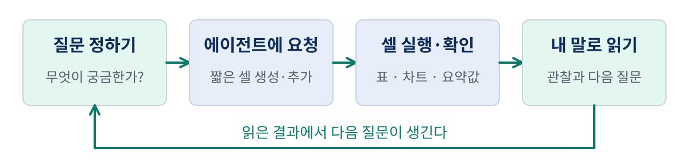
| 순서 | 지금의 질문 | 에이전트가 추가할 것 | 내가 확인할 것 |
|---|---|---|---|
| 1 | 이 표에는 무엇이 들어 있나? | 첫·마지막 행, 크기, 열의 뜻과 자료형, 기간 | 한 행·한 열의 의미 |
| 2 | 그림을 그리기 전에 문제가 보이나? | 빈값·중복 날짜·날짜 순서 점검 | 문제 행과 다음 행동 |
| 3 | 가격이 어떤 흐름을 보였나? | 종가 선 그래프와 최고·최저의 원래 행 | 축·단위·날짜·같은 최댓값 |
| 4 | 거래량은 보통 어느 정도였나? | 거래량 그래프, 평균·중앙값, 상위 5일 | 큰 값과 요약값의 관계 |
| 5 | 내가 쓴 관찰이 자료와 맞나? | 날짜·값·단위 대조와 기록 | 사실과 아직 풀지 않은 질문 |
실제 요청문은 다운로드 파일에 모두 있다. 아래 인용 상자는 학습에 필요한 핵심을 추린 요약이다. 전체 요청에는 파일 보존, 코드 셀 구성, 한국어 설명, 실행 전 상태 같은 세부 조건도 담았다. 출력과 셀 배치를 최대한 비슷하게 따라 하려면 전체 요청문을 순서대로 전달한다.
첫 요청의 핵심
이 폴더의 samsung-2024.csv와 자료안내.md를 읽고 first-eda.ipynb를 만들어 주세요.
지금은 표의 구조만 확인하고 싶습니다.
첫 5행과 마지막 5행, 전체 행·열 수, 각 열의 의미와 자료형,
가장 이른 날짜와 늦은 날짜를 보여 주세요.
날짜는 날짜형으로 읽고 원본 CSV는 덮어쓰지 마세요.
차트와 자동 정제는 아직 하지 말고, 새 셀은 실행 전 상태로 남겨 주세요.
실습 영상 1 · 요청을 보내고 셀을 실행한다 · 20초
한국어 안내 · 무음 · MP4 내려받기 · 안내 자막 내려받기
생성 완료 답변 뒤에는 실제 파일을 열어 내용을 확인한다. 코드 셀을 선택한 뒤 Shift + Enter로 실행하고 출력을 읽는다. 파일을 수정해 다시 열었을 때는 디스크의 최신 파일인지 확인한다. VS Code 노트북 위쪽의 Run All로 모든 셀을 실행한다. 새 커널에서 재현성을 확인할 때에는 Restart 후 Run All을 누른다. VS Code 공식 노트북 안내에 파일 열기, 커널 선택과 실행 버튼이 설명돼 있다.
한 행은 하루이고, 한 열은 값의 종류다
먼저 첫 다섯 행을 본다. pandas는 Python에서 표를 다루는 도구이며, DataFrame은 그 표를 담는 자료 구조다. 여기서는 표를 df라는 이름으로 불렀다. df.head(5)는 앞의 다섯 행을 보여 준다. pandas 읽기·쓰기 입문 안내에서 CSV를 표로 읽고 처음과 끝을 살펴보는 방법을 확인할 수 있다.
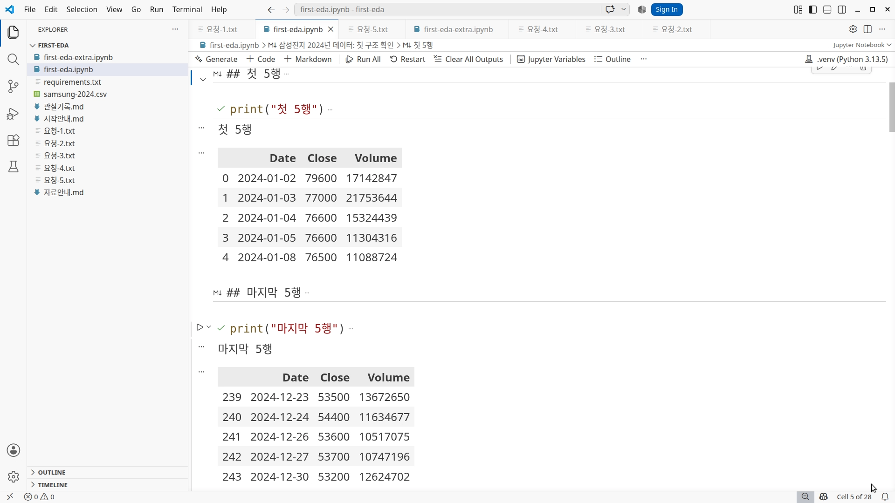
첫 행을 가로로 읽으면 2024년 1월 2일, 종가 79,600원, 거래량 17,142,847주다. 한 행 안의 세 값이 같은 거래일을 설명한다. 세로로 Close 열을 읽으면 날짜별 종가를 비교하게 된다. 왼쪽의 0, 1, 2는 표를 읽을 때 붙은 행 번호인 인덱스이며 CSV의 데이터 열은 아니다.
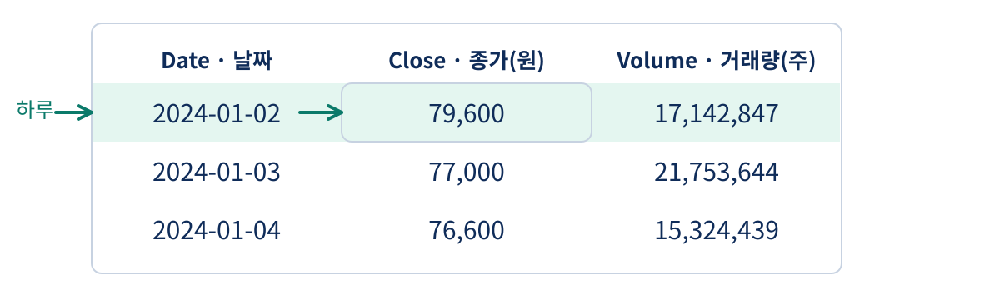
head(5)가 다섯 행을 보여 줬다고 전체가 다섯 행인 것은 아니다. 노트북의 전체 크기는 244행·3열이다. 마지막 다섯 행도 확인하면 파일의 끝부분이 어떤 모습인지 알 수 있다. 행 수와 열 수를 말할 때는 미리보기의 표시 개수와 원래 표의 크기를 구분한다.
# 노트북에서 사용한 핵심 코드 발췌
import pandas as pd
df = pd.read_csv(
"samsung-2024.csv", encoding="utf-8-sig",
parse_dates=["Date"],
)
df.head(5)
# df.shape는 (행 수, 열 수)를 알려 줍니다.
실습 영상 2 · 미리보기와 전체 크기를 구분한다 · 19초
한국어 안내 · 무음 · MP4 내려받기 · 안내 자막 내려받기
잠깐 읽어 보기: 1월 3일 종가는 얼마인가? 답은 같은 날짜 행의 Close인 77,000원이다. 옆의 Volume 21,753,644를 가격으로 읽으면 단위와 값의 뜻이 모두 달라진다.
자료형과 기간을 확인하면 숫자의 자리를 알 수 있다
자료형은 프로그램이 값을 어떤 종류로 다루는지 알려 준다. 날짜처럼 보이는 글자가 실제 날짜형인지, 가격이 숫자인지 확인한다. 값이 숫자로 보이더라도 문자열이면 숫자 계산이나 정렬이 의도와 다르게 작동할 수 있다. 이번에는 CSV를 읽을 때 Date를 날짜형으로 지정했다.
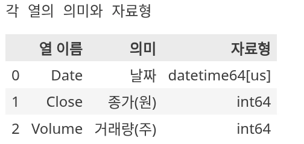
| 열 | 이 파일에서의 의미 | 단위 | 확인한 자료형 |
|---|---|---|---|
Date |
한 행이 가리키는 거래일 | 날짜 | 날짜형 |
Close |
그날의 종가 | 원 | 정수형 |
Volume |
그날 거래된 주식 수 | 주 | 정수형 |
이 파일에서 가장 이른 날짜는 2024-01-02, 가장 늦은 날짜는 2024-12-30이다. 이를 “2024년 자료”라는 요청 조건과 비교한다. 1년치라고 해서 365행이어야 하는 것은 아니다. 주가 파일은 거래일 단위이며 주말과 휴일은 일반적으로 별도 관측 행이 없다. 다만 244행이라는 개수만으로 거래일이 모두 들어 있다고 증명할 수는 없다. 이번에는 날짜 범위를 읽었고 거래소 거래일 목록과의 전수 대조는 하지 않았다.
기간을 말할 때는 파일명에 적힌 2024와 실제 가장 이른·늦은 날짜를 함께 본다. 잘못된 파일을 열었거나 일부 기간만 받은 경우도 이 단계에서 발견할 수 있다.
빈값·중복·날짜 순서를 점검하고 문제 행을 본다
그림을 그리기 전에 세 가지를 묻는다. 빠진 셀이 있는가, 같은 날짜가 반복되는가, 날짜가 앞에서 뒤로 가는가? 이 점검은 나중에 결과를 설명할 때 엉뚱한 숫자를 읽는 일을 줄여 준다.
두 번째 요청의 핵심
기존 노트북 끝에 빈값 수, 중복 날짜 수, 날짜 오름차순 여부를 추가해 주세요.
문제가 있으면 해당 행도 보여 주세요. 문제가 없으면 없다고 출력하세요.
원본을 바꾸거나 빈값을 자동으로 채우거나 행을 삭제하지 마세요.
점검에 문제가 없을 때 날짜순 분석용 복사본 df_sorted를 만들어 주세요.
빈값은 관측값이 없는 셀이다. 거래량 0은 “거래량이 0으로 기록됐다”이고, 빈값은 “값이 없다”이므로 같은 뜻이 아니다. df.isna().sum()으로 열별 빈값 수를 셀 수 있다. pandas의 isna 안내는 결측값을 식별하는 동작을 설명한다.
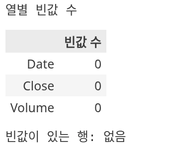
중복 날짜는 같은 날짜가 반복된 경우다. 이번 파일은 한 종목의 하루 한 행이므로 날짜를 기준으로 본다. 여러 종목이 섞이면 종목과 날짜를 함께 봐야 하며, 날짜가 같다는 이유만으로 중복이라고 할 수 없다. duplicated()는 기본적으로 같은 값이 처음 나온 행을 빼고 추가 행을 센다. keep=False로 찾으면 해당하는 모든 행을 볼 수 있다. pandas의 duplicated 안내에서 이 차이를 확인할 수 있다.
날짜 순서는 시간 흐름을 그리기 위해 확인한다. 날짜가 뒤섞인 상태에서 선으로 이어 그리면 선이 시간을 거슬러 연결될 수 있다. 오름차순은 이른 날짜가 앞, 늦은 날짜가 뒤라는 뜻이다.
| 점검 | 이 파일의 결과 | 문제가 보이면 할 일 |
|---|---|---|
| 열별 빈값 | 세 열 모두 0 | 어떤 날짜·열에서 빠졌는지 본다. |
| 중복 날짜 | 추가 행 0 | 같은 날짜의 모든 행을 나란히 본다. |
| 날짜 순서 | 오름차순 | 역전된 행을 확인하고 정렬 기준을 정한다. |
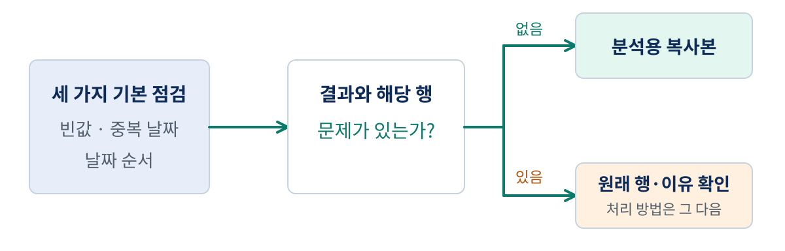
실습 영상 3 · 빈값·중복·날짜 순서를 점검한다 · 18초
한국어 안내 · 무음 · MP4 내려받기 · 안내 자막 내려받기
이번에는 세 점검을 통과해 df_sorted라는 분석용 복사본을 만들었다. 문제가 있는 파일이라면 먼저 해당 행과 자료 안내를 확인한다. 원인도 모른 채 빈값을 0으로 채우거나 행을 삭제하면 내가 분석할 자료 자체가 달라진다. 에이전트가 알아서 정리했다고 해도 무엇을 왜 바꿨는지 확인해야 한다.
종가 선 그래프를 읽고 원래 행으로 돌아간다
표에서 날짜별 숫자를 읽었다면 이제 흐름을 그림으로 본다. 가로축은 날짜, 세로축은 종가이며 단위는 원이다. 선 그래프는 날짜 순으로 점을 연결해 시간에 따른 높낮이를 살펴보기 좋다. pandas 시각화 입문 안내는 표의 열을 그림에 연결하는 기본 방법을 보여 준다. 실제 노트북은 matplotlib으로 축·단위·표시 위치를 조정했다.
세 번째 요청의 핵심
날짜별 종가 선 그래프와 종가가 가장 높은 날·낮은 날의 원래 행을 추가해 주세요.
가로축은 날짜, 세로축은 종가(원), 제목은 삼성전자 2024년 종가로 적어 주세요.
최고·최저 지점을 표시하되 날짜와 가격 글자가 겹치지 않게 해 주세요.
가격의 원인이나 미래는 추측하지 마세요.
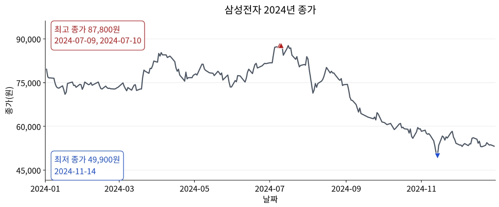
그림은 7월 초 높은 구간과 11월 중순 낮은 구간을 보여 준다. 정확한 숫자는 원래 행으로 돌아가 확인한다. 이 저장본에서 최고 종가는 87,800원, 최저 종가는 49,900원이었다. 최고 종가를 기록한 날은 7월 9일과 7월 10일, 이틀이다. 점이 가까워 화면에서 하나처럼 보일 수 있으므로 최댓값과 같은 모든 행을 찾는다.
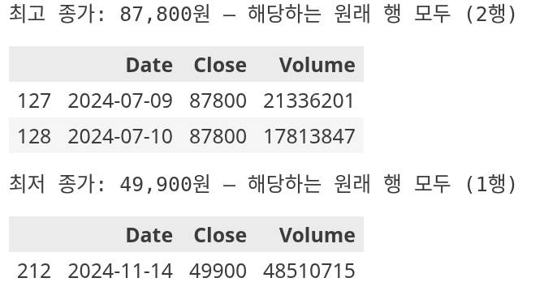
실습 영상 4 · 종가 흐름을 보고 실제 날짜를 읽는다 · 22초
한국어 안내 · 무음 · MP4 내려받기 · 안내 자막 내려받기
max()는 최댓값을 구한다. 그 값과 Close가 같은 행을 찾으면 같은 최댓값이 여러 번 나왔는지도 알 수 있다. 처음 나온 위치 하나만 찾는 방법은 이 질문에 충분하지 않다.
# 실제 그래프 셀의 핵심 발췌: 같은 최고 종가의 모든 행
highest_rows = df_sorted.loc[
df_sorted["Close"].eq(df_sorted["Close"].max())
].copy()
“7월 초에 높았고 11월 중순에 낮았다”는 관찰은 할 수 있다. “어떤 뉴스 때문에 그랬다”는 설명에는 추가 자료가 필요하다. 그래프의 끝부분이 내렸다는 사실만으로 다음 날도 내릴 것이라고 말할 수는 없다.
평균과 중앙값은 서로 다른 방식으로 가운데를 요약한다
거래량을 살펴보기 전에 요약값 두 가지를 익힌다. 평균은 값을 모두 더한 뒤 값의 개수로 나눈 것이다. 중앙값은 값을 크기순으로 놓았을 때 가운데 값이다. 값이 짝수 개면 가운데 두 값의 평균을 사용한다. pandas 통계 입문 안내에는 평균·중앙값 등 여러 요약 통계를 구하는 방법이 나온다.
예를 들어 거래량이 1, 2, 2, 3, 12라고 해 보자. 이 다섯 숫자는 설명용이며 실제 주가 파일에서 뽑은 다섯 날이 아니다. 합계 20을 5로 나누면 평균은 4다. 크기순 가운데인 세 번째 값은 2이므로 중앙값은 2다. 큰 값 12가 평균을 높이는 모습을 볼 수 있다.
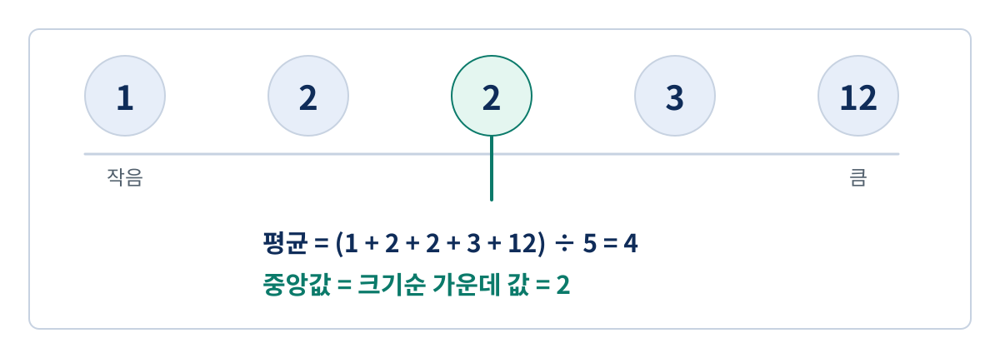
평균이 틀렸고 중앙값이 맞다는 뜻은 아니다. 평균은 전체 합계의 크기를 반영하고, 중앙값은 크기순 중앙의 위치를 알려 준다. 둘을 함께 보면 큰 값이 있는 자료를 하나의 숫자로만 읽을 때 놓칠 수 있는 특징이 드러난다. 큰 값이 눈에 띈다고 자동으로 오류로 분류하거나 지우지도 않는다.
읽기 질문: 12가 더 커지면 어느 요약값이 곧바로 변할까? 나머지 네 값이 그대로이고 가장 큰 값만 커지면 평균이 커진다. 가운데 위치의 2는 그대로다.
거래량 그림과 통계의 단위를 맞춰 읽는다
이제 실제 거래량에 적용한다. 네 번째 요청에서는 날짜별 거래량 막대 그래프, 평균·중앙값·최댓값, 거래량이 큰 상위 다섯 날을 만든다. 막대는 각 거래일의 거래량을 나타낸다. 읽기 쉽도록 그림에서는 백만 주, 표에서는 주를 사용한다고 명시했다.
날짜별 거래량 막대 그래프, 평균·중앙값·최댓값을 추가해 주세요.
거래량이 큰 상위 5일의 날짜·종가·거래량도 보여 주세요.
막대의 세로축은 거래량(백만 주), 표의 단위는 주로 적어 주세요.
평균과 중앙값은 서로 다른 점선으로 표시하고 범례를 넣어 주세요.
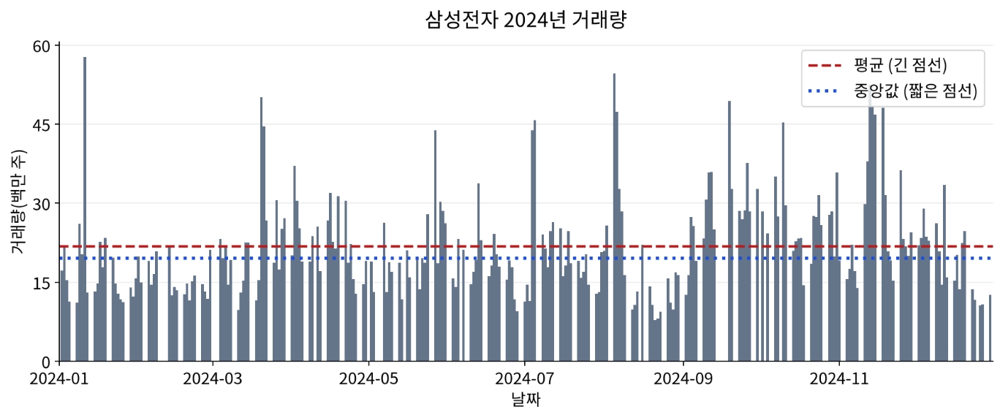
이 파일의 하루 거래량 평균은 21,738,603.38주, 중앙값은 19,597,440.5주다. 쉽게 읽으면 평균 약 2,174만 주, 중앙값 약 1,960만 주다. 그래프에서는 약 21.74백만 주, 19.60백만 주에 해당한다. 숫자의 자릿수가 다르게 보여도 단위를 맞추면 같은 크기를 가리킨다.
| 항목 | 이 파일의 값 | 읽는 방법 |
|---|---|---|
| 하루 평균 거래량 | 21,738,603.38주 | 244행 거래량 합계를 244로 나눴다. |
| 하루 중앙 거래량 | 19,597,440.5주 | 크기순 122번째와 123번째의 평균이다. |
| 최대 거래량 | 57,691,266주 | 2024년 1월 11일의 원래 행에서 확인했다. |
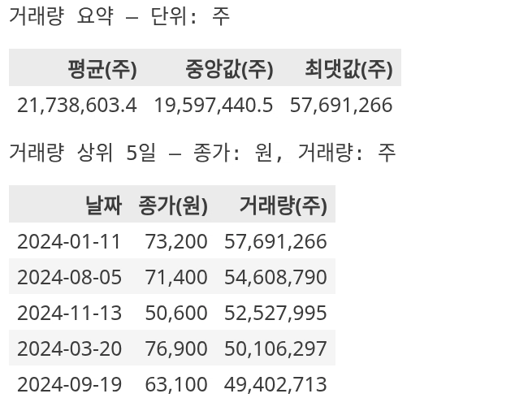
실습 영상 5 · 거래량의 단위와 요약값을 읽는다 · 22초
한국어 안내 · 무음 · MP4 내려받기 · 안내 자막 내려받기
거래량이 가장 많았던 날은 2024년 1월 11일이고 그날의 종가는 73,200원이다. 이 확인으로 “거래량이 많았다”와 “어떤 가격이 기록됐는가”를 연결할 수 있다. 거래량 숫자만으로 매수세가 강했거나 가격이 오른 원인을 설명했다고 결론 내리지는 않는다. 다음 질문으로 해당 날짜 전후 거래일의 가격을 함께 살펴볼 수 있다.
관찰 두 문장과 다음 질문 하나를 남긴다
마지막 요청 전에 먼저 내가 문장을 써 본다. 에이전트가 해석을 전부 대신 쓰게 하면 내가 무엇을 읽었는지 확인하기 어렵다. 대상·기간·날짜·값·단위를 넣고, 그림이나 표에서 찾은 사실을 적는다. 에이전트에는 그 문장이 CSV와 맞는지 확인해 달라고 요청한다.
실제 실습에서는 “7월 9일 87,800원이 가장 높다”고 적어 확인을 요청했다. 에이전트가 원래 행을 대조해 7월 10일에도 같은 값이 있다고 보완했다. 최대 숫자는 맞았지만 그 값이 나온 날짜를 모두 적지는 못한 경우다. 결과를 읽고 질문을 되돌리는 이유가 여기 있다.
다섯 번째 요청의 핵심
제가 적은 관찰의 날짜·값·단위·기간이 CSV와 맞는지 확인해 주세요.
틀리거나 빠진 부분은 원래 행을 근거로 고쳐 주세요.
확인한 사실과 아직 답하지 않은 질문을 나누어 관찰기록.md에 적어 주세요.
한 종목·한 기간의 관찰이라는 한계도 남겨 주세요.
최종 기록은 다음처럼 쓸 수 있다.
관찰 1: 이 파일에서 2024년 최고 종가는 7월 9일과 7월 10일의 87,800원이며, 최저 종가는 11월 14일의 49,900원이다.
관찰 2: 이 파일의 2024년 하루 거래량은 평균 약 2,174만 주, 중앙값 약 1,960만 주이다. 평균이 중앙값보다 크다.
다음 질문: 거래량이 가장 많았던 날의 실제 행과 그 전후 거래일의 가격을 함께 보면 어떤 움직임이 보일까?
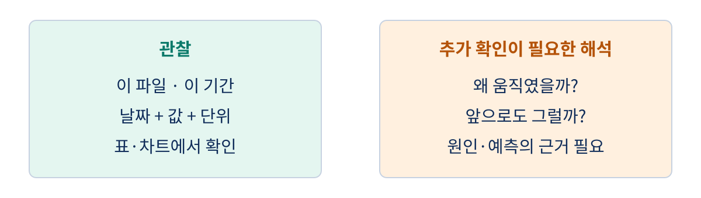
이번 검토에서는 최대 거래량 날짜와 그날의 종가에 더해 바로 전후 한 거래일도 대조했다. 앞뒤 다섯 거래일로 범위를 넓혔을 때의 움직임과 그 이유는 아직 확인하지 않았다. 이 기록은 삼성전자 한 종목의 2024년 저장본에 대한 관찰이다. 다른 종목과 기간에도 같다고 일반화하거나 미래 수익을 예상한 기록이 아니다.
좋은 관찰 기록은 나중에 다시 열었을 때 근거를 찾을 수 있다. 노트북의 그래프만 저장하기보다 관련 행과 문장을 같은 파일에 남긴다. 코드를 외우지 않아도 “무엇을 요청했고, 어떤 결과를 확인했으며, 다음에 무엇을 볼 것인가”를 설명할 수 있으면 첫 EDA를 수행한 것이다.
문제가 있는 표를 만나면 바로 고치기 전에 확인한다
기본 파일은 빈값과 중복이 없었다. 실제로 문제가 보이면 무엇을 해야 하는지 별도의 오류 연습 표로 확인한다. first-eda-extra.ipynb의 첫 실험은 원본 첫 세 행을 복사해 두 번째 행의 종가를 빈값으로 바꾸고, 첫 번째 행을 한 번 더 붙인 뒤 순서를 뒤집는다. 원본 CSV는 보존한다.
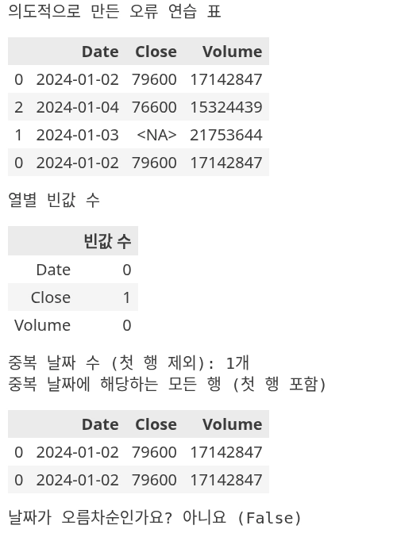
실제 출력은 Close 빈값 1개, 처음 나온 행을 제외한 중복 날짜 1행, 날짜 오름차순 아니요다. 중복 날짜의 모든 행을 출력하면 1월 2일 두 행이 함께 보인다. “중복 1행”과 “해당 날짜 2행 표시”는 서로 모순이 아니다.
여기서 “다 알아서 고쳐 줘”라고 요청하기 전에 생각한다. 빈 종가를 원래 파일에서 확인할 수 있는가? 같은 날짜의 두 행은 값도 같은가? 원본의 날짜 순서는 어떠한가? 이 실험은 우리가 일부러 바꿨으므로 원본과 비교할 수 있다. 출처를 모르는 실제 파일이라면 자료 안내와 원래 제공처에 돌아갈 필요가 있다.
연습 질문: 빈 종가를 0으로 채우면 가격 그림에 무엇이 생길까? 실제로 확인하지 않은 0원이라는 점이 생길 수 있다. 이 노트북은 자동으로 채우거나 삭제하지 않고 문제를 보여 주는 데서 멈춘다.
기간을 바꾸면 관찰도 달라질 수 있다
추가 노트북의 두 번째 실험은 원본 전체를 다시 읽어 1~6월과 7~12월로 나눈다. 같은 종목, 같은 열, 같은 계산 방법으로 비교하되 기간만 바꾼다. 오류 연습 표를 이어서 쓰지 않는다.
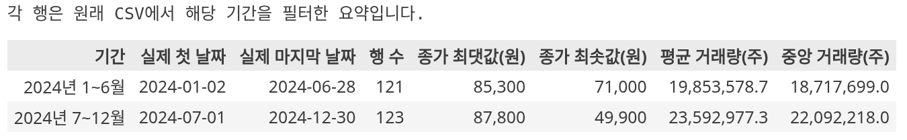
상반기는 121행, 하반기는 123행이었다. 상반기의 종가 최댓값·최솟값은 85,300원·71,000원, 하반기는 87,800원·49,900원이었다. 평균 거래량도 상반기 약 1,985만 주, 하반기 약 2,359만 주로 달랐다. “2024년 평균 거래량”과 “2024년 하반기 평균 거래량”은 서로 다른 기간의 요약이다.
실습 영상 6 · 문제를 찾고 기간을 바꿔 비교한다 · 20초
한국어 안내 · 무음 · MP4 내려받기 · 안내 자막 내려받기
연습 요청: “같은 CSV를 상반기와 하반기로 나누고, 두 기간에 같은 통계를 적용해 주세요. 어떤 기간의 결과인지 표의 행 이름에 적어 주세요. 이 비교에서 확인한 사실 한 문장을 제가 쓸 수 있도록 질문을 남겨 주세요.”
표를 보고 “하반기의 평균 거래량이 상반기보다 컸다”고 말할 수 있다. 그러나 이 비교는 수익률을 계산하거나 그 차이의 원인을 밝혀낸 실험은 아니다. 기간을 바꿨다는 사실을 숨기지 않고 문장에 넣는 것이 핵심이다.
다시 실행하고 내 말로 설명하면 첫 EDA가 남는다
작성한 노트북을 저장하고 커널을 재시작해 위에서 아래로 실행한다. 이전 실행에서 남은 변수를 우연히 사용하지 않고 현재 파일만으로 결과가 나오는지 확인하기 위해서다. 기본·추가 노트북은 VS Code에서 각각 커널을 재시작한 뒤 위부터 실행했고, 오류 없이 결과를 대조했다.
오늘의 흐름은 표 읽기 → 문제 점검 → 그림과 통계 읽기 → 관찰과 다음 질문이다. 이 흐름을 다른 파일에 적용할 때는 먼저 그 파일에서 한 행이 무엇인지 다시 묻는다. 다음 영상에서는 날짜와 공개 시각이 분석에 어떤 차이를 만드는지 살펴본다.
| 스스로 답할 질문 | 이 실습의 답 |
|---|---|
| 무엇의 어떤 기간 자료인가? | 삼성전자, 2024-01-02~2024-12-30의 저장본이다. |
| 한 행·한 열은 무엇인가? | 한 행은 한 거래일, 열은 날짜·종가·거래량이다. |
| 기본 점검 결과는 무엇인가? | 빈값·중복 날짜가 없고 날짜는 오름차순이었다. |
| 그림의 축과 단위는 무엇인가? | 날짜별 종가(원), 날짜별 거래량(백만 주)이다. |
| 눈에 띈 값을 실제 행에서 확인했나? | 최고 종가 두 날짜, 최저 종가 날짜, 최대 거래량 날짜를 확인했다. |
| 자료로 말할 수 있는 것과 남은 질문은? | 이 기간의 관찰을 적었고, 전후 거래일 비교와 원인 조사는 남았다. |
자주 막히는 지점과 읽기 질문
파일을 찾을 수 없다고 나온다. CSV와 노트북이 같은 폴더인지, 파일 이름이 정확한지 확인한다. 에이전트에 오류 메시지와 현재 파일 목록을 주고 읽을 경로를 확인하도록 요청한다. 새 가상 데이터로 조용히 대체해서는 같은 실습이 되지 않는다.
pandas가 없다고 나온다. 패키지를 설치한 Python과 선택한 커널이 같은 환경인지 확인한다. 시작 안내의 requirements.txt를 사용한다. 설치·커널 선택의 상세 원리는 앞 차시에서 이어 온다.
그래프 한글이 네모로 나온다. 한글 폰트가 있는지 확인한다. 제공한 노트북은 설치된 한글 폰트 후보를 찾으며, 없다면 대체 폰트를 사용한다. 에이전트에 현재 시스템에서 쓸 수 있는 한글 폰트를 확인하고 제목·축이 보이도록 수정해 달라고 요청한다.
셀을 고쳤는데 예전 결과가 보인다. 수정한 코드와 현재 출력이 같은 실행인지 확인한다. 저장 후 새 커널에서 위부터 실행하면 이전 변수의 영향을 줄일 수 있다. 오류가 남으면 오류 셀부터 확인하고 아직 실행되지 않은 결과를 완료 결과로 읽지 않는다.
빈값이 0이면 데이터가 완전한가? 받은 행 안의 빈 셀은 없다는 뜻이다. 누락된 거래일이나 잘못된 가격까지 모두 확인했다는 뜻은 아니다.
거래량이 유난히 큰 날은 지워야 하는가? 크다는 사실만으로 오류라고 할 수 없다. 그날의 원래 행과 자료 설명을 보고 다음 질문을 정한다.
실습 파일 내려받기
처음에는 시작 묶음을 풀고 에이전트에 요청문을 하나씩 전달한다. 답안 묶음은 다른 폴더에 풀어 내가 만든 결과와 비교한다.
- 시작 묶음 ZIP: CSV, 자료 안내, 시작 안내, 패키지 목록, 요청문 다섯 개.
- 답안 묶음 ZIP: 실제 실행한 기본·추가 노트북, 관찰 기록, 같은 CSV와 환경 파일.
- 시작 안내, 자료 안내, 패키지 목록.
- 삼성전자 2024 CSV.
- 요청 1 · 표 읽기, 요청 2 · 점검, 요청 3 · 종가, 요청 4 · 거래량, 요청 5 · 관찰과 추가 실습.
- 완성 기본 노트북, 추가 실습 노트북, 관찰 기록.
외부 1차 자료에서 확인한 내용
다음 자료는 2026년 9월 6일 확인했다. 본문의 삼성전자 수치와 화면은 직접 수집한 CSV를 실행한 결과다. 아래 문서가 그 가격의 진위를 별도로 보증하는 것은 아니다. 교재 원문을 옮기지 않고, 실습 설명과 학습용 도식은 AIML Quant에서 작성했다.
| 자료 | 이 리포트에서 확인한 내용 |
|---|---|
| NIST · What is EDA? | EDA에서 그림을 활용해 자료 구조·특이점·가정을 살피는 접근을 확인했다. |
| VS Code · Jupyter Notebooks | 앞선 강의와 같은 VS Code에서 노트북 열기, 커널 선택, Run All과 저장 동작을 확인했다. |
| pandas · Read and write tabular data | CSV 읽기와 처음·끝 행, 자료형을 살펴보는 방법을 확인했다. |
| pandas · Summary statistics | 평균·중앙값 등 표의 요약 통계를 구하는 방법을 확인했다. |
| pandas · Create plots | 표의 열을 그림으로 나타내는 기본 방법을 확인했다. |
| pandas · isna / duplicated | 빈값 식별과 중복 판별에서 처음 행을 제외하거나 모두 포함하는 동작을 확인했다. |
| FinanceDataReader · Naver 구현 | 이번 CSV의 수집 도구가 네이버 차트 데이터 경로를 읽는 구현을 확인했다. |